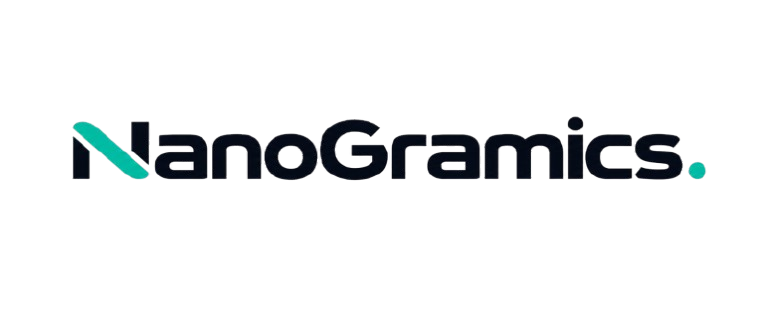

Close to the work.
You speak directly with the person planning and building your project. That keeps feedback clear, decisions fast, and the original goal visible throughout the work.

Syed Muzammil Ali / Founder
I founded Nanogramics to give businesses one dependable partner from the first conversation to the finished product. I work directly across strategy, design, development, and delivery, keeping every decision connected to the problem we are solving.
Why Nanogramics exists
One person, fully accountable for the work. Every idea, screen, system, and launch moves in the same direction.
You speak directly with the person planning and building your project. That keeps feedback clear, decisions fast, and the original goal visible throughout the work.
Good design and clean code matter, but they are not the finish line. I focus on what helps the business operate better, serve customers, and move forward.
I do not disappear when a project goes live. The work continues through testing, improvements, support, and the practical lessons that only arrive through real use.
How I work
Direct communication, thoughtful decisions,
and progress you can actually see.
Clear priorities and honest conversations keep the project focused on what matters.
I stay responsible for how the strategy, design, code, and final experience work together.
Regular reviews and working releases give you something real to respond to throughout the project.